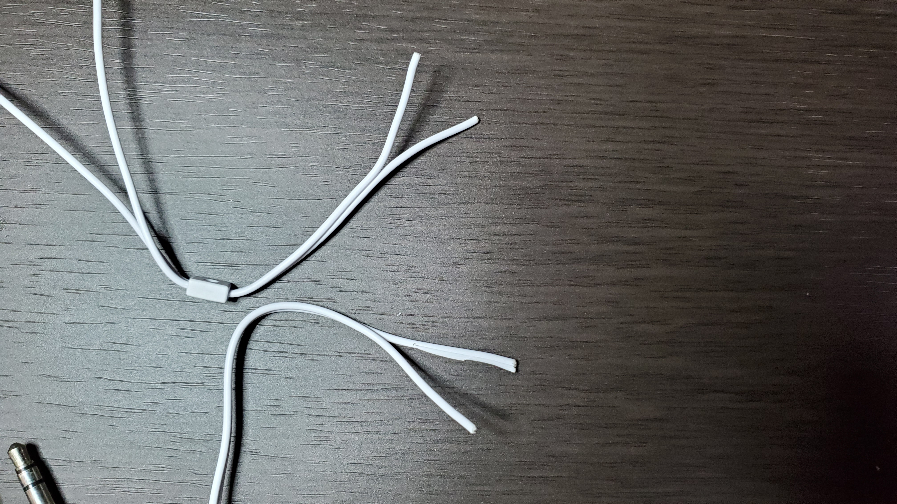
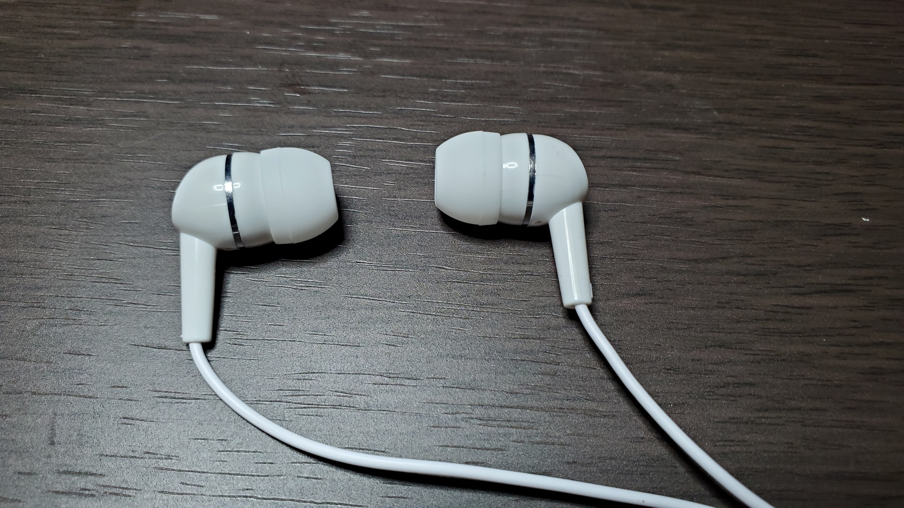
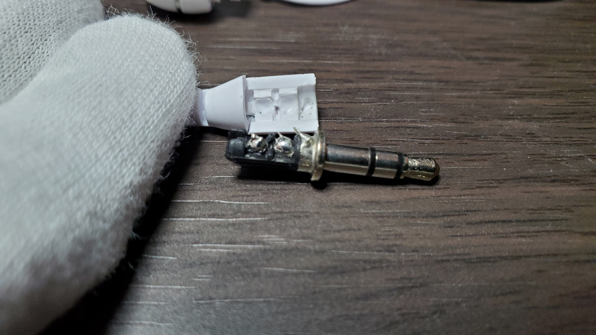

とにかく短く 短いイヤホンが欲しい！！
という訳でとにかく短いイヤホンが欲しい男2022年代表のはちみつです。
なんで短いイヤホンが欲しいのかって言うと、VRをやる時に使いたいからなんですよね。
VRやる時って、普通のイヤホンを使うと手に引っかかったりだからと言って途中で結んで短くしても結んだところが首に当たったりしてとにかく邪魔くさいです。
なので短いイヤホンが欲しいんですが、短いイヤホンって需要が米粒くらいしか無いので全くと言っていいほど売ってません。
なら、作ってしまおうというのが今回のコンセプトです。
材料紹介 さて、僕はさっきも言った通りとにかく短いイヤホンが欲しい男代表なんですが、とにかくお金がない男代表でもあるんですよ。
そんなビンボーマンの強い味方が100均です。
という訳で今回のイヤホン改造作戦の道具も100均で揃えます。ちゃんとしたイヤホン使うのは怖いしね()
・ビニールテープ(絶縁?)
感電するのは怖いので絶縁テープが欲しくて探してみたんですが、ありませんでした。でもこのビニールテープに「電気絶縁用」って書いてあったんですよね。ぶっちゃけ絶縁テープとビニールテープの違いがよく分かんないんだけど、まぁ大丈夫だと信じたい()
・ラジオペンチとカッター
ラジオペンチは線をぶった切るのに使います。で、カッターは被覆を剥がすのに使います。
・イヤホン
100円のめっちゃシンプルな奴です。こういうイヤホンはゴミという評価しか聞いたことが無いので正直期待はしてません。改造するなら適任ですね。
開けてみるとこんな感じ。
なんか裏側にダイヤみたいなのがありました。何か意味があるんでしょうか。
ちなみにこれの入ってた袋の裏に、分解や改造をしないでください。って書いてありました。
それじゃあ改造していきましょう。
音はどうなん? 改造する前にこれで音楽を聞くことを忘れてたので聞いてみます。
うん、
改造してみる まあ音質なんてたかが知れてたので気にせず改造してみましょう。
※ちなみに全くの勘でやってるので絶対マネしないように！！
まずここの部分を短くしたいのでラジオペンチでぶった切ります。
ぶった切りました。

そしたら真ん中にカッターで切れ込みを入れて割いていきます。
このイヤホンは割いた二本の線で右と左が分かれてるみたいです。
そしたら割いた線にカッターで切れ込みを入れて被覆を剥がします。
すると赤と青と銅色の線が出てきました。
調べてみると赤い線がイヤホンの右側、青い線が左側、そして銅の線はアースらしいです。
こういう電子系は全く詳しくないのであーだこーだ言える立場じゃないですが、これのアース線からどうやって地面に電気が流れていくんでしょうかね？全然分からねぇぜ...

そしたら赤の線、青の線、銅線をそれぞれ撚り合わせます。
本当ならこれをした段階でテスターとかで通電の確認をするべきですが、100均に売ってないし僕も持ってないのでとりあえず今回はスキップします。(ちなみにクソ危ないので通電確認は絶対した方が良い)
そしたら撚り合わせた所を絶縁テープでぐるぐる巻きにして完成です。
いざ試聴 さあ遂にこの瞬間がやって来ました。
僕は今とてもドキドキしてます。(感電するのが怖い)
まぁ感電したら米津〇師になれるという事で早速最初に聞いたのと同じ音楽を聞いてみましょう。
・・・。
・・・・。
・・・・・。
いや何も聞こえんが！？！？
という事で結果はまさかの動作不良。
意外と自信はあったんですが全く何も聞こえませんでした。
イヤホンジャックをぐりぐりしても特に何も無し。撚り合わせた部分を押し付けても全く何もなりませんでした。(せめて感電してくれ)
もしかしたら線の途中で撚り合わせたのがダメだったのかもしれません。

こことか...
こことかの末端に途中で切り落とした線を付け直せば上手くいったかもしれません。
という訳でこのイヤホンはもう使い物にならないのでどんどん分解してみましょう。
まずはこっち。右と左の区別つかねぇだろこれとか思ってたら普通に書いてありました。分かるかい！
ダメでした。
普通に無理でした。
この後ヤスリで削ったりして無理矢理破壊したんですが、恐らくこのプラスチックを破壊しないと中身は取り出せません。どうやって組み立ててるんだろう？

イヤホンジャックの方は簡単に取れました。
イヤホンジャックにさっきの赤、青、銅の線がはんだ付けされてますね。順番は全く分かりませんが。
一応はんだごては使うかもしれないという事で探したんですが無かったです。なので今回は分解しただけ。
おわり という訳で無事イヤホンの改造は爆死という事で終わりを迎えました。
ただ発見は結構あったのでまだ諦めなくて良さそうです。
実はもう一つ同じイヤホンを買ってたので、今度はんだごてを手に入れたらまたリベンジしたいと思います。
こうしてはちみつは短いイヤホンを求めて明日も100均を巡るのであった...
じゃあね！！